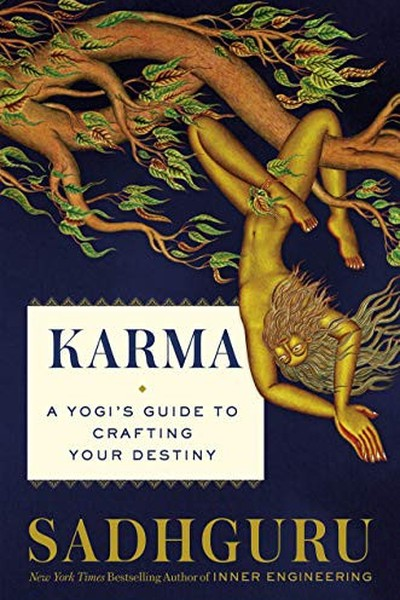

Library › Self-Improvement
Karma: A Yogi's Guide to Crafting Your Destiny — Summary & Key Lessons

Karma is not fate — it's software you can rewrite.
📖 OPEN THE FULL INTERACTIVE BREAKDOWN →🌐 Read it in Hindi, Hinglish, Gujarati, Tamil & 22 more languages — free, with audio.
💡 The Big Idea
Sadhguru's most accessible book redefines karma — not as cosmic punishment or fate but as the accumulated memory and information that shapes how you perceive and act. Karma is literally 'action' and its residue: the software your mind runs on. His liberating claim: karma is not a verdict on your past but raw material for your future — once you understand it, you can stop being a puppet of your programming and start consciously authoring your life. The book is a practical guide to becoming the programmer of your own mind instead of its program.
🧠 The 6 Key Lessons
Lesson 1: Karma Is Not Fate — It Is Information
Part 1: The Definition
Sadhguru dismantles the popular meaning of karma as destiny or punishment. Karma, he says, is simply 'action' and its residue — the impressions, patterns and memory that shape how you perceive and respond. It's the software your mind runs on, accumulated over a lifetime (and, in his view, beyond). The lesson is liberating: karma is not a sentence you serve but a dataset you can work with. The person who sees their patterns as programming can reprogram; the person who sees them as fate is stuck. Understand the mechanism, and fate becomes material.
📖 Example: Sadhguru uses the analogy of a computer: your hardware is your body, your software is your karma — and software can be updated. The 'unlucky' pattern you keep repeating is a bug, not a curse. Read the full example →
⚡ Do this: Identify one repeated pattern in your life (the same argument, the same failure, the same choice). Write it as a program: 'When X happens, I do Y.' See the code, not the curse.
Lesson 2: The Storehouse of Memory: You Perceive Through Your Past
Part 2: The Mechanism
Sadhguru explains that you never perceive reality directly — every experience is filtered through your accumulated memory and impressions. Two people see the same event completely differently because their karmic filters differ. The lesson: your 'objective' view is actually a projection, and knowing this is power. When a situation triggers you, the trigger is in your storehouse, not in the event. The person who can notice their filter operating — 'this is my memory reacting, not reality' — gains a degree of freedom no one else has. Perception is the first thing to upgrade.
📖 Example: Sadhguru describes how the same word or gesture can enrage one person and amuse another — the difference is not the event but the stored impressions it activates. The reaction is a rerun, not a fresh response. Read the full example →
⚡ Do this: Next time you're triggered, pause and ask: 'What stored memory is this activating?' Name the rerun. The naming breaks the loop.
Lesson 3: Karma Is Action: You Are Choosing Your Software Every Moment
Part 3: The Responsibility
The root meaning of karma is 'action' — and every action you take now is programming your future self. Sadhguru's radical point: you are not a victim of your karma; you are its author, right now, with every choice. The person who acts with awareness accumulates empowering patterns; the person who reacts unconsciously accumulates the same loops. The lesson: responsibility is response-ability — the ability to choose your response. Each moment is a line of code you're writing into your own future. The question isn't 'what karma did I inherit?' but 'what karma am I writing today?'
📖 Example: Sadhguru compares life to a book: most people read their past as a fixed story, but the truly free person is writing — every action is a new sentence in the chapter that hasn't been read yet. Read the full example →
⚡ Do this: For one day, treat every action as code you're writing for tomorrow's you. Before each significant choice, ask: 'Is this the program I want to run?'
Lesson 4: Freedom From the Karmic Cycle: The Gap Between Stimulus and Response
Part 4: The Liberation
Sadhguru's path to freedom: between a stimulus and your response lies a gap, and widening that gap is the whole practice. The karmic puppet responds instantly, automatically; the free person pauses, observes, chooses. His tools: conscious breathing (which shifts your chemistry and gives you a beat), awareness of body sensations (which anchor you in the present rather than the replay), and the inner distance of 'witnessing'. The lesson: freedom is not escaping your karma but gaining altitude over it — watching it operate without being operated by it.
📖 Example: Sadhguru teaches that a few deep breaths before responding to a trigger changes the chemistry of the reaction — the pause creates the space where choice can enter. The gap is the freedom. Read the full example →
⚡ Do this: Train the gap: before every reactive moment this week, take two conscious breaths and observe your body's sensations. The pause is the practice.
Lesson 5: The Karmic Bank: Your Body, Mind, Energy and Emotions as Accounts
Part 5: The Systems
Sadhguru maps karma across four systems — the physical body, the mind, the emotions and the energy — each carrying its own stored patterns. Your posture carries karma (physical habits), your thoughts carry karma (mental loops), your feelings carry karma (emotional residue), and your energy carries karma (vitality or depletion). The lesson: you can work on any account — change your body's habits, and the mind shifts; shift your energy, and the emotions settle. The integrated practice (yoga, breath, awareness, diet) is not mystical — it is system maintenance across all four accounts.
📖 Example: Sadhguru points out how changing posture, diet or breath visibly changes mood and thought — the accounts are connected, and upgrading any one upgrades the whole system. Read the full example →
⚡ Do this: Audit your four accounts: body (posture/movement), mind (thought loops), emotion (residue), energy (vitality). Pick the weakest and one daily practice to upgrade it this month.
Lesson 6: Destiny Is Crafted: The Ultimate Lesson
Part 6: The Craft
The book's closing promise: if karma is information, then destiny is a craft — something you build consciously rather than something you inherit passively. Sadhguru's definition of freedom: not the absence of karma but the ability to author it. The lesson: the most powerful beings are not those with no past but those who have made peace with it and taken authorship of the future. Your past is material, not verdict. Your future is being written by your present choices. Craft it deliberately — with awareness, responsibility and the willingness to keep upgrading your own software.
📖 Example: Sadhguru himself — from a childhood in a small town to a global movement — is presented as the demonstration: the karma he worked with became the craft he shaped. The destiny was authored, not assigned. Read the full example →
⚡ Do this: Write your 'destiny statement': the one line describing the self you are consciously building. Post it where you'll see it — and let today's choices vote for it.
✅ 5-Step Action Plan
- Write one repeated pattern as a program — see the code, not the curse.
- Name the stored memory behind your next emotional trigger.
- Treat one day's actions as code for tomorrow's you.
- Train the gap: two breaths before every reaction.
- Write your destiny statement and let today vote for it.
💬 Best Quotes from Karma: A Yogi's Guide to Crafting Your Destiny
- “Karma is not a sentence you serve; it is a dataset you can work with.”
- “Every action is a line of code you're writing into your own future.”
- “Freedom is not escaping karma — it is gaining altitude over it.”
Interactive version: mark lessons as read, listen in your language, share quote cards.